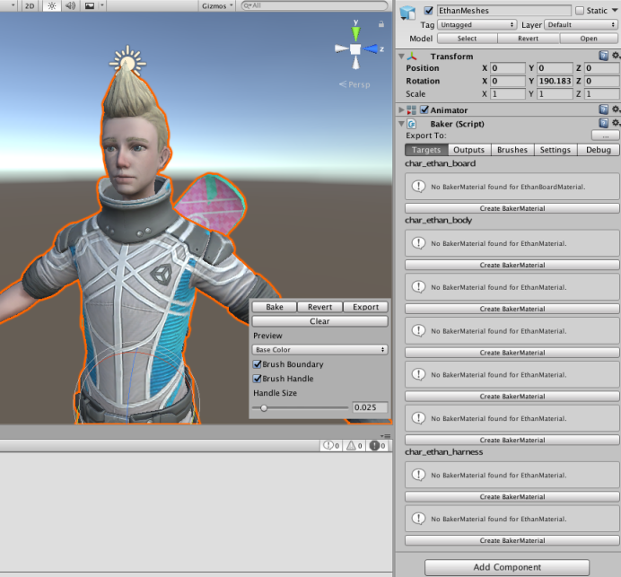
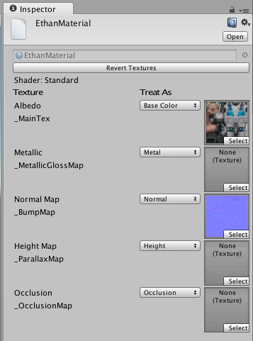
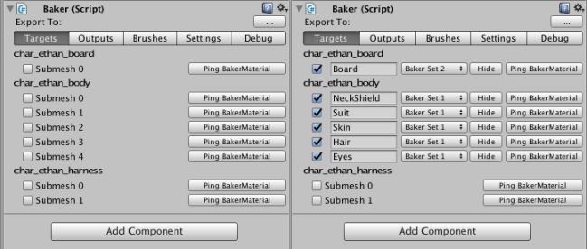
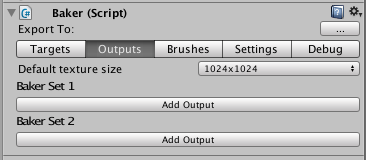
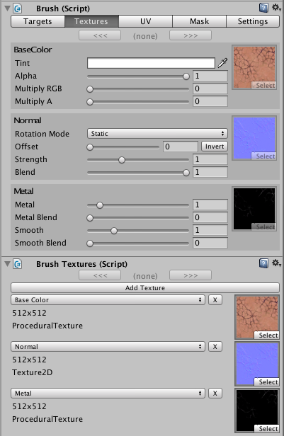
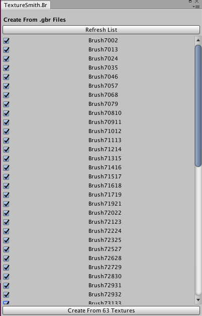

Getting started
This will go over creating a Baker, a Brush, baking the textures and exporting them. I'm using the Unity standard assets from here.
Baker
Add the Baker component to the root of the GameObject you want to paint.

A BakerMaterial is needed for any Material you'll be working with. These direct the Baker on how to treat the Material's textures. Click Create BakerMaterial to automatically create one.

Note that for a Renderer the Material list is basically a submesh list. Each Material is used to render that specific submesh.
Targets
Select the submeshes you want to paint to. It's ideal that you give each one a unique name.

Click Hide to toggle submesh visibility so you know what it is.

Since the snowboard mesh on Ethan's back uses a different set of textures you must mark it with a different Baker Set.

Outputs
Select Outputs in the toolbar.

Since I want to paint to the Diffuse, Normal, and Metal map, I'll click Add Output 3 times, for both Baker Sets. Most things will be set up automatically though I'm going to set the Default texture size to 2048. For more info on Outputs click here.

Brushes
Select Brushes in the toolbar.
Click the Default button to create a brush with the default set up. Then click Select Brush.
Brush
You'll see a list of all paintable submeshes. I just want this Brush to paint to the Skin submesh.

Textures
Click Textures. The Brush can get textures from multiple sources, typically the BrushTextures component. I clicked Add Texture three times, and input a Diffuse, Normal, and Metal zombie texture.

Before tweaking any settings, let's position the Brush. Think of it as a projector, painting in the direction it's aiming. The x and y scale is the size, z scale is the distance it will reach.
Now that it's in position, click Bake to preview. Click Revert to reset all textures and materials.

The hard straight edges look unnatural, so we will add a mask.
Mask
You can use a texture or you can create a MaskSet from an .abr file (Photoshop) or .gbr files (Gimp). I got some Gimp brushes from here, and put them in a folder any where in the project. On the Unity toolbar select Texture Smith/Create/Mask From Brushes and create a set.

Now select the Brush and the Mask toolbar. Set Mask Set to the created set, and select one.
Export
Select the Baker and the Settings toolbar. Click ... and set a folder to export to. Then click Export.